+ HIGH− LOW
혈관 경계의 신호 변화를 색으로 표시합니다. 절대값(Ab)과 상대값(Rel) 보기를 지원합니다.
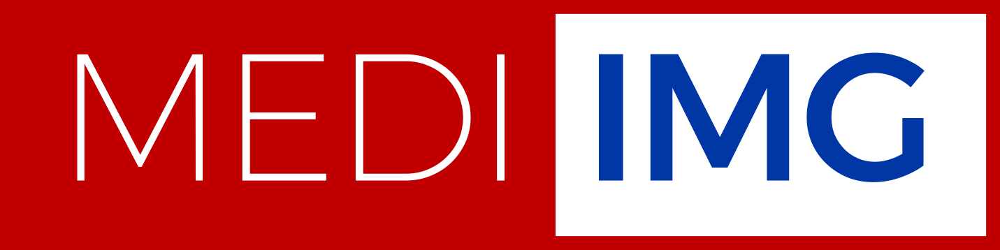
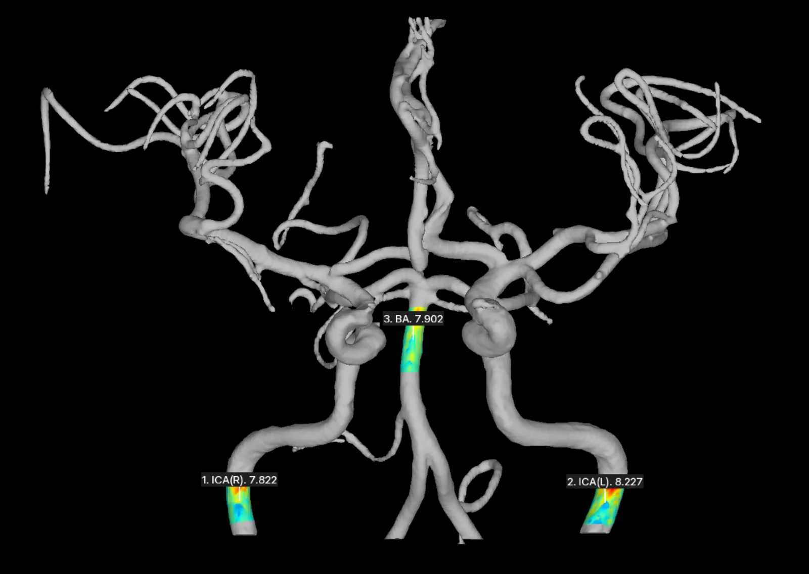
TOF-MRA 기반 뇌혈관질환 위험 마커.
NeuFlow는 TOF-MRA 영상에서 뇌혈관의 구조와 혈류 관련 특성을 분석하는 의료기기 소프트웨어입니다. 기존 영상에 담긴 정보를 3차원 혈관 영상과 SIG 정량정보로 제시해, 의료진이 뇌졸중 위험을 살펴보도록 돕습니다.
FDA 510(k) Cleared · K240385 — 식약처 의료기기 인증 제인 23-4077 호
SIGNAL INTENSITY GRADIENT
뇌졸중 위험신호
NeuFlow 측정 결과 화면 · 2026-11-10 수신 자료
2018년 1월 설립 이후 의료기기 제조 인증, 신의료기술평가 신청 대상 확인, FDA 510(k) Cleared를 거쳐 뇌혈관 정량 분석을 임상 현장으로 가져왔습니다.
주식회사 메디이미지 창립
기업부설 연구개발전담부서 설립
디딤돌 · 창업성장기술개발사업(중소벤처기업부) 완료
의료기기 제조 및 품질관리 기준 적합인정서(GMP)
의료기기제조업 허가
의료기기제조인증(품목 허가)
해외규격인증획득지원(중소벤처기업부) 완료
바이오·의료 기업 역량강화 사업(과학기술원) 완료
SIG 측정기술 신의료기술평가 신청 대상 확인(건강보험심사평가원)
벤처기업인증 완료
블루포인트파트너스 액셀러레이터 시드투자 유치
AI 데이터센터 서비스(인공지능산업융합사업단) 선정 · K-바이오헬스 지역센터 지원사업(분당서울대학교병원) 완료
기업부설연구소 인증 · 분당서울대학교병원 HIP로 연구소 이전
보건산업 특허전략 및 인허가컨설팅 지원사업 · 디지털 혁신의료기기 개발 지원사업 완료
TIPS 프로그램 선정
K-의료산업 글로벌 시장 플랫폼 구축사업 기업지원 완료
FDA 510(k) Cleared K240385 · Google for Startups Cloud Program 선정 · TIPS 후속 프로그램(해외마케팅 · 창업사업화) 선정 · 의료기기 사업화 촉진 지원사업(전남대 산학협력단) 완료
중소벤처기업부 초격차 스타트업 DIPS 1000 선정
ISO 27000 시리즈 정보보안 3종 + HIPAA · ISO 13485 획득
중소벤처기업부 혁신제품 적합
NeuFlow는 TOF-MRA 영상에서 뇌혈관의 구조와 혈류 관련 특성을 분석하는 의료기기 소프트웨어입니다. 기존 영상에 담긴 정보를 3차원 혈관 영상과 SIG 정량정보로 제시해, 의료진이 뇌졸중 위험을 살펴보도록 돕습니다.
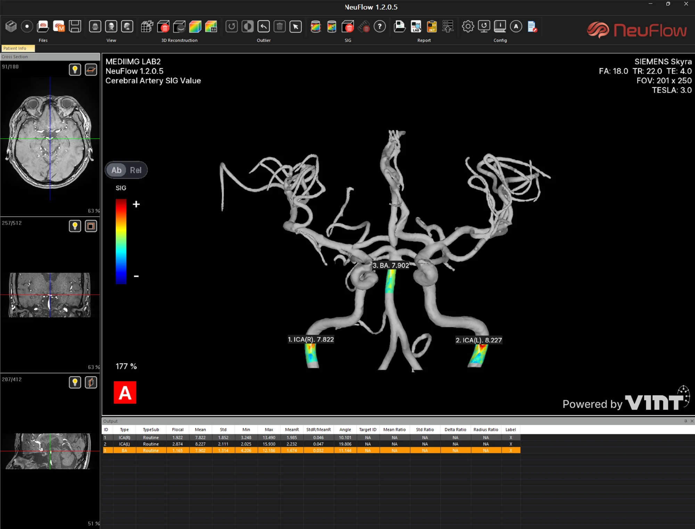
NeuFlow는 TOF-MRA 영상의 혈관 경계 부근에서 나타나는 신호(SIG, Signal Intensity Gradient) 변화를 분석해 혈관별 정량정보를 얻습니다. 혈액이 혈관벽을 따라 흐를 때 작용하는 힘을 혈관벽전단응력이라고 하며, SIG는 이와 관련된 혈류역학적 특성을 이해하는 대리지표로 연구되어 왔습니다.
화면 · NeuFlow 1.2.0.5 실제 캡처 (2026-11-10 수신)
TOF-MRA 흑/백 이미지에서 산출되는 SIG 정보가 나오기 전에는 뇌혈관의 상태를 정량적 수치로 분석하기 어려웠습니다. 보고서는 혈관 정보와 정량정보를 담고, 의료진이 임상 정보와 함께 해석합니다.
혈관 경계의 신호 변화를 색으로 표시합니다. 절대값(Ab)과 상대값(Rel) 보기를 지원합니다.
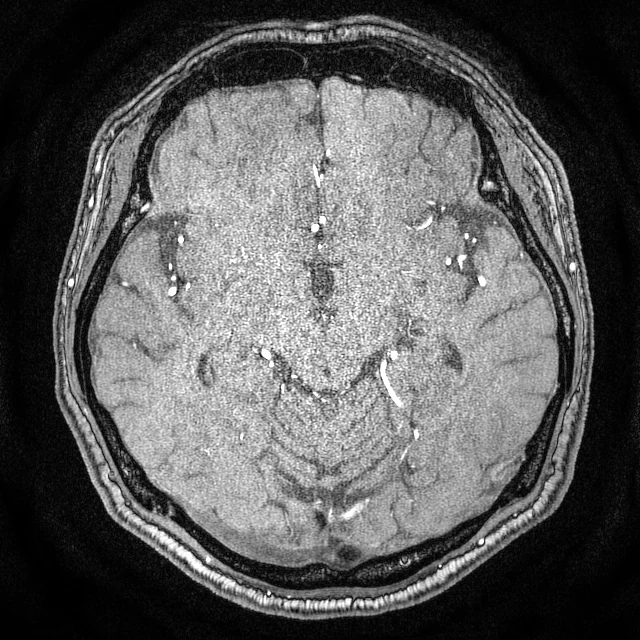
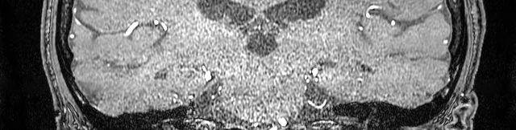
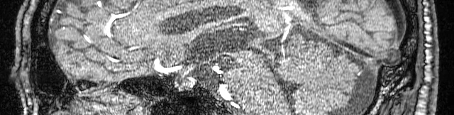
결과의 의미는 영상 조건과 환자의 상태를 고려해 전문 의료인이 판단합니다.
SIG 정보가 나오기 전에는 뇌혈관의 상태를 정량적 수치로 분석하기 어려웠습니다. 손잡이를 좌우로 움직여 보세요.
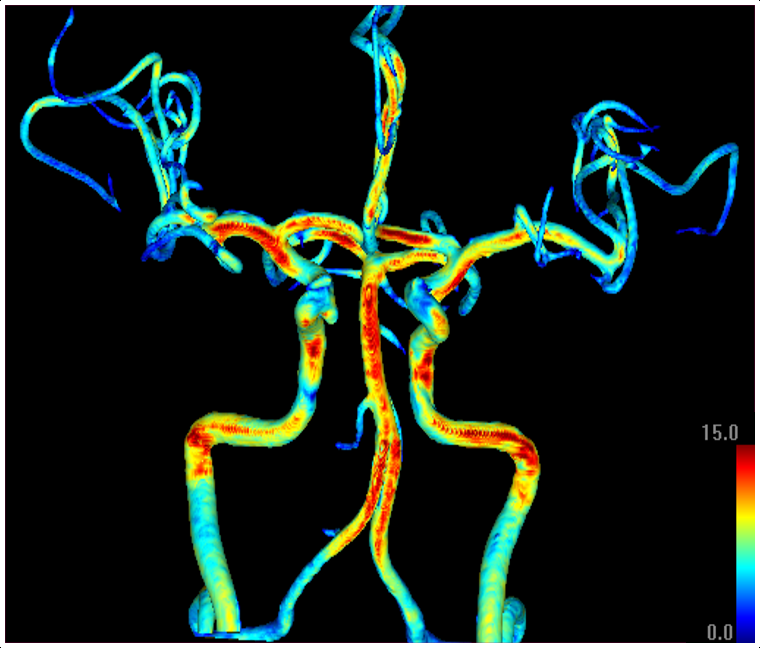
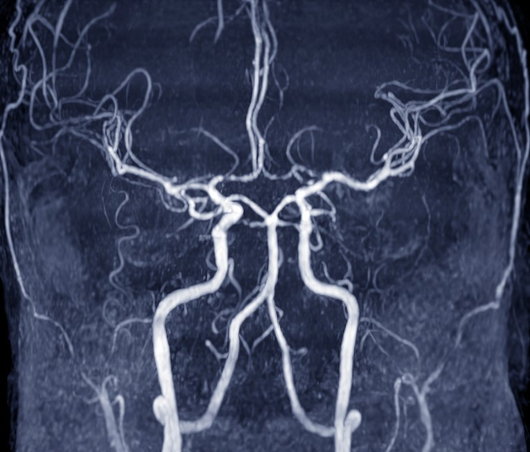
실제 결과물 한 쌍 (같은 구도) · 현 홈페이지 자료
STEP — 01 / 03
분석에 적합한 기존 촬영 영상을 사용합니다.
3차원 혈관 정보를 구성하고 관심 영역의 SIG를 정량화합니다.
혈관 정보와 정량정보를 보고서로 확인하고, 의료진이 임상 정보와 함께 해석합니다.
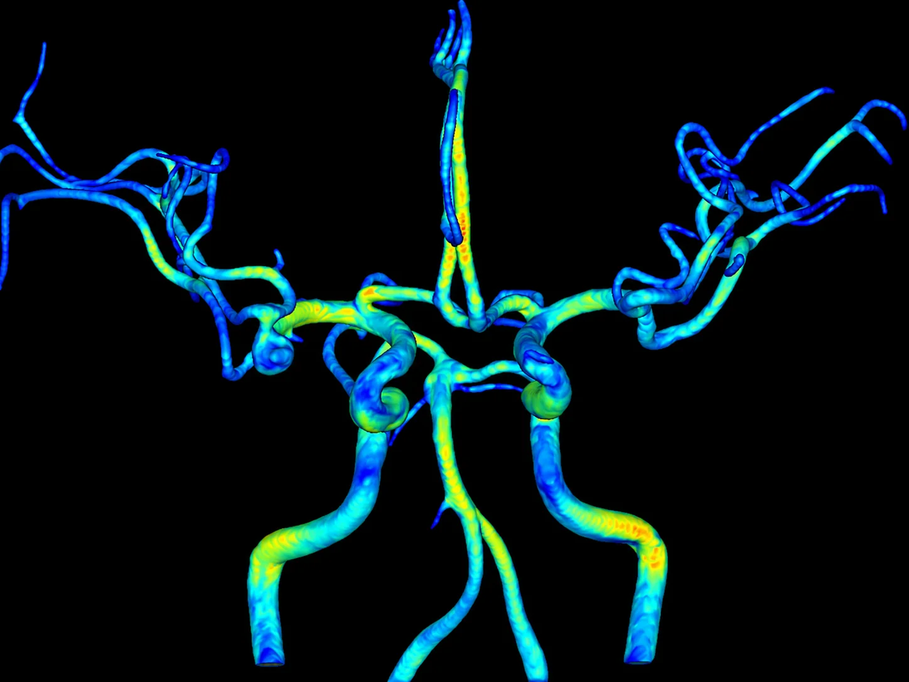
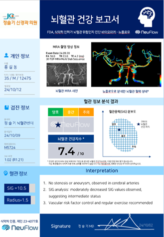
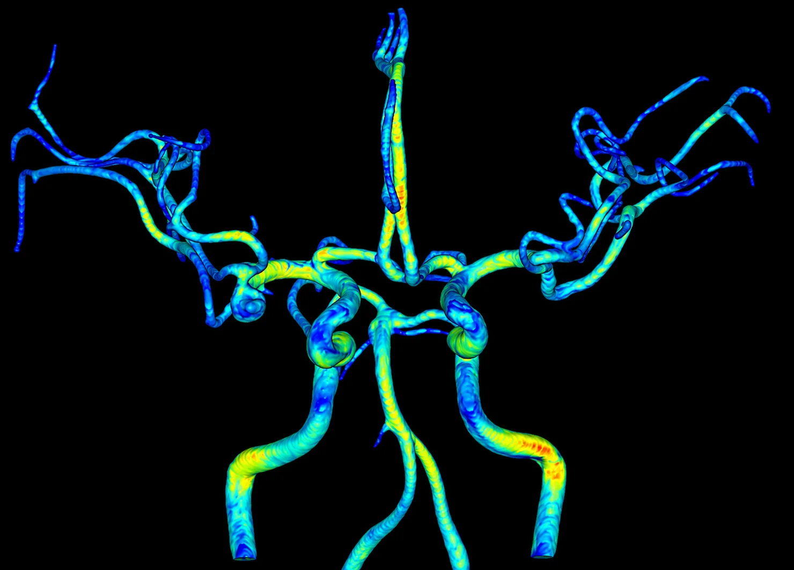
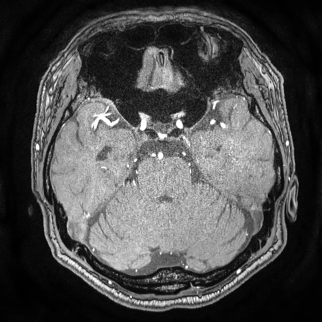
현 홈페이지 표기 수치 · 최신 수치로 추후 갱신 ⑥
모야모야병 환자의 TOF-MRA에서 SIG를 측정해, 질환의 진행과 혈관벽 혈류역학 지표의 관계를 분석한 연구입니다.
뇌경색 환자에서 SIG와 예후 사이의 관계를 살펴, 정량 지표가 추적 관찰에 줄 수 있는 근거를 다룬 연구입니다.
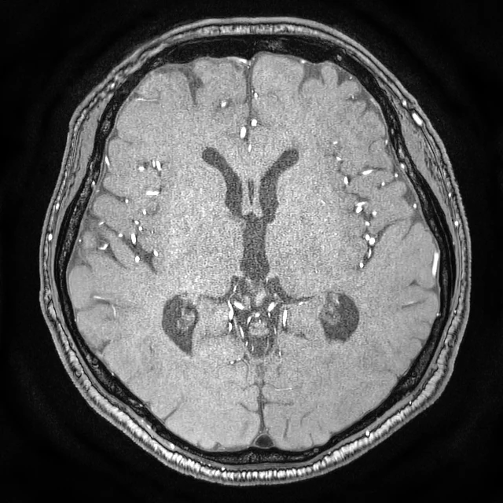
ANEURYSM뇌동맥류와 혈관벽 혈류역학 지표의 관련성을 분석해, 영상 판독에 더할 수 있는 정량 정보를 제시한 연구입니다.
TRUSTED BY — 함께하는 병원 현 홈페이지 로고 기준
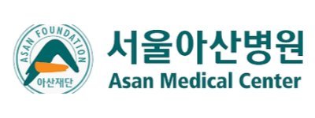
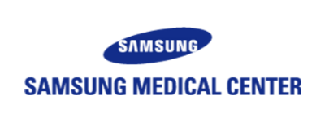
NeuFlow는 분석에 적합한 기존 TOF-MRA 영상을 활용하는 방식입니다. 실제 분석 가능 여부는 촬영 조건과 영상 품질, 의료기관의 운영 방식에 따라 확인이 필요합니다.
NeuFlow는 SIG 기반 정량정보와 뇌졸중 위험신호의 해석을 하나의 보고서로 담아 제공합니다. 분석 수치와 그 임상적 의미를 함께 살펴보고, 참고할 수 있습니다.
보고서는 관련 정보를 검토하고 설명하는 데 활용하는 자료입니다. 개인의 상태는 의료진이 증상, 병력, 위험요인과 다른 검사 결과를 함께 고려해 판단합니다.
위 내용은 뇌졸중 위험신호 분석의 적용 방향입니다. 실제 제품 화면이나 확정된 제공 항목을 의미하지 않으며, 보고서에 반영되는 항목은 연구 결과와 제품화 과정에 따라 달라질 수 있습니다.
뇌졸중 위험신호, 뉴플로우의 SIG로 놓치지 마세요.
제품 도입·연구 문의 info@mediimg.com / 02-484-5773 접수 이메일 확인 중 ④